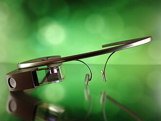
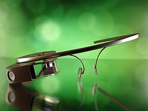
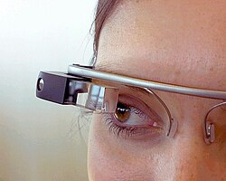
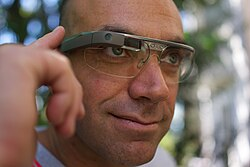
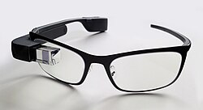
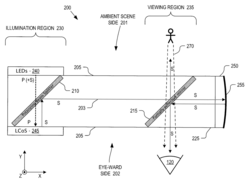

Google Glass
Source: https://en.wikipedia.org/wiki/Google_Glass
Category: products_hardware
Depth: 1
Summary
Google Glass, or simply Glass, is a discontinued brand of smart glasses developed by Google's X Development, with a mission of producing a ubiquitous computer. Google Glass displays information to the wearer using a head-up display. Wearers communicate with the Internet via natural language voice commands.
Images






Full Article
Optical head-mounted computer glasses
Not to be confused with Google Goggles.
Google Glass, or simply Glass, is a discontinued brand of smart glasses developed by Google's X Development (formerly Google X), with a mission of producing a ubiquitous computer. Google Glass displays information to the wearer using a head-up display. Wearers communicate with the Internet via natural language voice commands.
Google started selling a prototype of Google Glass to qualified "Glass Explorers" in the US on June 27, 2012, for a limited period for $1,500, (with distribution of those purchases beginning on April 16, 2013), before it became available to the public on April 15, 2014. It has an integrated 5 megapixel still/720p video camera. The headset received a great deal of criticism amid concerns that its use could violate existing privacy laws.
On January 15, 2015, Google announced that it would stop producing the Google Glass prototype. The prototype was succeeded by two Enterprise Editions, whose sales were suspended on March 15, 2023. More than a decade later, Google would return to the extended reality space with Android XR, an operating system that will power headsets and smartglasses.
Development and release
Google Glass was developed by Google X, the facility within Google devoted to technological advancements such as driverless cars.
The Google Glass prototype resembled standard eyeglasses with the lens replaced by a head-up display. In mid-2011, Google engineered a prototype that weighed 8 pounds (3.6 kg); by 2013 they were lighter than the average pair of sunglasses.
The product was publicly announced in April 2012. Google co-founder Sergey Brin wore a prototype of the Glass to an April 5, 2012, Foundation Fighting Blindness event in San Francisco. In May 2012, Google demonstrated for the first time how Google Glass could be used to shoot videos.
In a demo presented by Brin at the Google I/O conference in June 2012, four skydivers wearing Google Glass jumped from a blimp and landed on the roof of the Moscone Center (where the conference was taking place), with the glasses livestreaming their descent for the audience. It was announced that the beta version of the glasses, dubbed the "Explorer Edition" would be made available exclusively for pre-order for the developers and programmers in attendance for $1,500.
In February 2013, interested potential Glass users were invited to submit an entry via Twitter or Google+, with hashtag #IfIHadGlass, to qualify for a chance to win access to purchase Google Glass Explorer Edition. The 8,000 selected qualifiers, dubbed "Glass Explorers," were notified in March 2013, and would be required to visit one of three Google pop-up shops (referred to as "basecamps") in Los Angeles, New York, or San Francisco to purchase the glasses, still priced at $1,500, following "fitting" and training from Google Glass guides.
The purchases of this prototype version, both those from the conference and those from the contest, began distribution on April 16, 2013.
In January of 2014, Google introduced four frame choices for prescription lenses for an additional $225 each. In March, Google also entered in a partnership with Luxottica, the Italian eyeware company which owns Ray-Ban, Oakley, and other brands, to offer additional frame designs.
Google briefly opened purchase of Google Glass to the general public in the US, first on April 15, 2014, reporting that the relatively limited stock sold out in a single day, and then again a month later on May 14. In June, Google Glass was also made available for consumers in the United Kingdom, priced at £1,000.
In January 2015, Google announced the end of the Google Glass Explorer beta program and halted sales of the product. In February 2015, The New York Times reported that Google Glass was being redesigned by former Apple executive Tony Fadell, and that it would not be released until he deemed it to be "perfect".
In July 2017, it was announced that the second iteration, the Google Glass Enterprise Edition, which had been deployed for testing in factories of US companies such as Boeing and GE, would now be available for other companies. The new edition also featured several significant upgraded features, such as higher camera resolution and longer battery life. Google Glass Enterprise Edition has reportedly been successfully used by Dr. Ned Sahin to help children with autism learn social skills.
In May 2019, Google announced the Google Glass Enterprise Edition 2. Google also announced a partnership with Smith Optics to develop Glass-compatible safety frames.
Features
- Touchpad: A touchpad, similar to that of one on a laptop, is located on the side of Google Glass, allowing users to control the device by swiping through a timeline-like interface displayed on the screen. Sliding backward shows current events, such as weather, and sliding forward shows past events, such as phone calls, photos, and circle updates.
- Camera: Google Glass has the ability to take 5 MP photos and record 720p HD video. Glass Enterprise Edition 2 has an improved 8MP 80° FOV camera.
- Display: The Explorer version of Google Glass uses a liquid crystal on silicon (based on an LCoS chip from Himax), field-sequential color system, LED illuminated display. The display's LED illumination is first P-polarized and then shines through the in-coupling polarizing beam splitter (PBS) to the LCoS panel. The panel reflects the light and alters it to S-polarization at active pixel sensor sites. The in-coupling PBS then reflects the S-polarized areas of light at 45° through the out-coupling beam splitter to a collimating reflector at the other end. Finally, the out-coupling beam splitter (which is a partially reflecting mirror, not a polarizing beam splitter) reflects the collimated light another 45° and into the wearer's eye.
Software
Main article: Glass OS
Applications
Google Glass applications are free applications built by third-party developers. Glass also uses many existing Google applications, such as Google Maps and Gmail. Many developers and companies built applications for Glass, including news apps, facial recognition, exercise, photo manipulation, translation, and sharing to social networks, such as Facebook and Twitter. Third-party applications announced at South by Southwest (SXSW) include Evernote, Skitch, The New York Times, and Path.
On March 23, 2013, Google released the Mirror API, allowing developers to start making apps for Glass. In the terms of service, it was stated that developers may not put ads in their apps or charge fees; a Google representative told The Verge that this might change in the future.
On May 16, 2013, Google announced the release of seven new programs, including reminders from Evernote, fashion news from Elle, and news alerts from CNN. Following Google's XE7 Glass Explorer Edition update in early July 2013, evidence of a "Glass Boutique", a store that will allow synchronization to Glass of Glassware and APKs, was noted.
Version XE8 made a debut for Google Glass on August 12, 2013. It brings an integrated video player with playback controls, the ability to post an update to Path, and lets users save notes to Evernote. Several other minute improvements include volume controls, improved voice recognition, and several new Google Now cards.
On November 19, 2013, Google unveiled its Glass Development Kit, showcasing the translation tool Word Lens, the cooking program AllTheCooks, and the exercise program Strava among others as successful examples. Google announced three news programs in May 2014—TripIt, FourSquare and OpenTable—in order to entice travelers. On June 25, 2014, Google announced that notifications from Android Wear would be sent to Glass.
The European University Press published the first book to be read with Google Glass on October 8, 2014, as introduced at the Frankfurt Book Fair. The book can be read as a normal paper book or—enriched with multimedia elements—with Google Glass, Kindle, on Smartphone and Pads on the platforms iOS and Android.
MyGlass
Google offered a companion Android and iOS app called MyGlass, which allowed the user to configure and manage the device. It was removed from the Play Store on February 22, 2020.
Voice activation
Other than the touchpad, Google Glass can be controlled using just "voice actions". To activate Glass, wearers tilt their heads 30° upward (which can be altered for preference) or simply tap the touchpad, and say "O.K., Glass." Once Glass is activated, wearers can say an action, such as "Take a picture", "Record a video", "Hangout with [person/Google+ circle]", "Google 'What year was Wikipedia founded?'", "Give me directions to the Eiffel Tower", and "Send a message to John" (many of these commands can be seen in a product video released in February 2013). For search results that are read back to the user, the voice response is relayed using bone conduction through a transducer that sits beside the ear, thereby rendering the sound almost inaudible to other people.
Use in medicine
In hospitals
Augmedix developed an app for the wearable device that allows physicians to live-stream the patient visit and claims it will eliminate electronic health record problems, possibly saving them up to 15 hours a week and improving record quality. The video stream is passed to remote scribes in HIPAA secure rooms where the doctor-patient interaction is transcribed, ultimately allowing physicians to focus on the patient. Hundreds of users were evaluating the app as of mid-2015.
In July 2013, Lucien Engelen commenced research on the usability and impact of Google Glass in the health care field. As of August 2013, Engelen, based at Singularity University and in Europe at Radboud University Nijmegen Medical Centre, was the first healthcare professional in Europe to participate in the Glass Explorer program. His research on Google Glass (starting August 9, 2013) was conducted in operating rooms, ambulances, a trauma helicopter, general practice, and home care as well as the use in public transportation for visually or physically impaired. Research included taking pictures, videos streaming to other locations, dictating operative log, having students watch the procedures and tele-consultation through Hangout. Engelen documented his findings in blogs, videos, pictures, on Twitter, and on Google+, with research ongoing as of that date.
In June 2014, Google Glass' ability to acquire images of a patient's retina ("Glass Fundoscopy") was publicly demonstrated for the first time at the Wilmer Clinical Meeting at Johns Hopkins University School of Medicine by Dr. Aaron Wang and Dr. Allen Eghrari. This technique was featured on the cover of the Journal for Mobile Technology in Medicine for January 2015. Doctors Phil Haslam and Sebastian Mafeld demonstrated the first application of Google Glass in the field of interventional radiology. They demonstrated how Google Glass could assist a liver biopsy and fistulaplasty, and the pair stated that Google Glass has the potential to improve patient safety, operator comfort, and procedure efficiency in the field of interventional radiology.
In 2015, IOS Press published "Clinical and Surgical Applications of Smart Glasses" a research article written by a team at the Columbia University Medical Center Department of Neurosurgery's Cerebrovascular Laboratory. Under Neurosurgeon Dr. Sander E. Connolly, Stefan Mitrasinovic, Elvis Camacho, Nirali Trivedi, and others analyzed Google Glass's useful applications including hands-free photo and video documentation, telemedicine, Electronic Health Record retrieval and input, rapid diagnostic test analysis, education, and live broadcasting.
In 2017, Swiss researchers assessed in a randomized controlled trial the adherence of emergency team leaders to the American Heart Association's (AHA) Pediatric Advanced Life Support (PALS) guidelines by adapting and displaying them in Google Glasses during simulation-based pediatric cardiac arrest scenarios.
In surgical procedures
On June 20, 2013, Rafael J. Grossmann, a Venezuelan doctor practicing in the U.S., was the first surgeon to demonstrate the use of Google Glass during a live surgical procedure. In August 2013, Google Glass was used at Wexner Medical Center at Ohio State University. Surgeon Dr. Christopher Kaeding used Google Glass to consult with a distant colleague in Columbus, Ohio. A group of students at The Ohio State University College of Medicine also observed the operation on their laptop computers. Following the procedure, Kaeding stated, "To be honest, once we got into the surgery, I often forgot the device was there. It just seemed very intuitive and fit seamlessly."
On June 21, 2013, doctor Pedro Guillen, chief of trauma service of Clínica CEMTRO of Madrid, also broadcast a surgery using Google Glass. In July 2014, the startup company Surgery Academy, in Milan, Italy, launched a remote training platform for medical students. The platform is a MOOC that allows students to join any operating theater thanks to Google Glass worn by surgeon. Also in July 2014, This Place released an app, MindRDR, to connect Glass to a Neurosky EEG monitor to allow people to take photos and share them to Twitter or Facebook using brain signals. It is hoped this will allow people with severe physical disabilities to engage with social media.
In lactation consultation
In Australia, in January 2014, Melbourne tech startup Small World Social collaborated with the Australian Breastfeeding Association (ABA) to create the first hands-free breastfeeding Google Glass application for new mothers. The application, named Breastfeeding Through Glass, allowed mothers to nurse their baby while viewing instructions about common breastfeeding issues (latching on, posture) or call a lactation consultant via a secure Google Hangout, who could view the issue through the mother's Google Glass camera.
The trial lasted 7 weeks, commencing on March 1 and ending on April 13, 2014. There were five mothers and their newborn babies in the trial, fifteen volunteer counselors from ABA, and seven project team members from Small World Social. The counselors were located in five States across Australia. The counselors were certified in lactation consultation, and located as far from the mothers as Perth, Western Australia, 3,500 kilometres away. While physically distant from the mothers, the counselors provided support using video calls with Google Glass, live on demand.
According to media commentary, the breastfeeding project demonstrated the potential of wearable devices for communities to deliver health and family support services across vast distances. The demonstrated positive uses of wearable devices contrasted some of the widespread criticism over privacy concerns that such devices have received. An article on Motherboard stated, "Google Glass, whether warranted or not, endures its fair share of criticism, largely because a lot of initial use cases have been, well, kinda creepy. So it's great to see instead Glass being used for uniquely positive ends, as it is with the Australian Breastfeeding Association's Breastfeeding Support Project." Other journalists and commentators also called the trial beneficial and an innovative application wearable technologies. ABC journalist/presenter Penny Johnston of the radio program Babytalk remarked:
The Google Glass if you think about it, is perfect to coach someone in breast feeding: if you are holding or feeding a baby, imagine a camera mounted on your glasses and look down. There you have the world's best view for checking the baby's latch and your breastfeeding technique!
In May 2014, Small World Social and ABA won the Gold Questar Award in the Emerging Media: App section, for the Breastfeeding with Google Glass App. In June 2014, Small World Social's Breastfeeding Support Project was awarded the Questar Best of Category Grand Prize For Emerging Media, which is given to the top 5% of entries.
ABA is optimistic about the future of wearable technologies supporting their work. Small World Social commenced a trial in the US in June 2014.
Media coverage
Journalism
In 2014, Voice of America Television Correspondent Carolyn Presutti and Electronics Engineer Jose Vega began a web project called VOA & Google Glass, which explored the technology's potential uses in journalism. This series of news stories examined the technology's live reporting applications, including conducting interviews and covering stories from the reporter's point of view. On March 29, 2014, American a cappella group Pentatonix partnered with Voice of America when lead singer Scott Hoying wore Glass in the band's performance at DAR Constitution Hall in Washington, D.C., during the band's worldwide tour—the first use of Glass by a lead singer in a professional concert.
In the fall of 2014, The University of Southern California conducted a course called Glass Journalism, which explored the device's application in journalism.
The WWF as of mid-2014 used Google Glass and UAVs to track various animals and birds in the jungle, which may be the first use of the device by a non-profit, non-governmental organization (NGO).
As of 2022 the product has been viewed as a failure, having been once slated as the next big thing in tech. While they no longer exist, the technology lives on in future products.
Public events
In 2014, the International Olympic Committee Young Reporters program took Google Glass to the Nanjing 2014 Youth Olympic Games and put them on a number of athletes from different disciplines to explore novel point of view filmmaking.
A visually impaired dancer, Benjamin Yonattan, used Google Glass to overcome his chronic vision condition. In 2015, Yonattan performed on the reality television program America's Got Talent.
Education
In early 2013, American educator Andrew Vanden Heuvel used Google Glass to take students on a virtual trip to the Large Hadron Collider at CERN. The trip was an early example of an Explorer Story promoted by the Google Glass marketing team.
Criticism
Privacy concerns
Concerns have been raised by various sources regarding the intrusion on privacy, and the etiquette and ethics of using the device in public and recording people without their permission. Google co-founder, Sergey Brin, claims that Glass could be seen as a way to become even more isolated in public, but the intent was quite the opposite: Brin views checking social media as a constant "nervous tic", which is why Glass can notify the user of important notifications and updates and does not obstruct the line of sight.
Additionally, there is controversy that Google Glass would cause security problems and violate privacy rights. Organizations like the FTC Fair Information Practice work to uphold privacy rights through Fair Information Practice Principles (FIPPS), which are guidelines representing concepts that concern fair information practice in an electronic marketplace.
Privacy advocates are concerned that people wearing such eyewear may be able to identify strangers in public using facial recognition, or surreptitiously record and broadcast private conversations. The "Find my Face" feature on Google+ functions to create a model of your face, and of people you know, in order to simplify tagging photos.
Some companies in the US have posted anti-Google Glass signs in their establishments. In July 2013, prior to the official release of the product, Stephen Balaban, co-founder of software company Lambda Labs, circumvented Google's facial recognition app block by building his own, non-Google-approved operating system. Balaban then installed face-scanning Glassware that creates a summary of commonalities shared by the scanned person and the Glass wearer, such as mutual friends and interests. Also created was Winky, a program that allows a Google Glass user to take a photo with a wink of an eye, while Marc Rogers, a principal security researcher at Lookout, discovered that Glass can be hijacked if a user could be tricked into taking a picture of a malicious QR code, demonstrating the potential to be used as a weapon in cyberwarfare.
In February 2013, a Google+ user noticed legal issues with Glass and posted in the Glass Explorers community about the issues, stating that the device may be illegal to use according to the current legislation in Russia and Ukraine, which prohibits use of spy gadgets that can record video, audio or take photographs in an inconspicuous manner.
Concerns were also raised in regard to the privacy and security of Glass users in the event that the device is stolen or lost, an issue that was raised by a US congressional committee. As part of its response to the committee, Google stated that a locking system for the device is in development. Google also reminded users that Glass can be remotely reset. Police in various states have also warned Glass wearers to watch out for muggers and street robbers.
Lisa A. Goldstein, a freelance journalist who was born deaf, tested the product on behalf of people with disabilities and published a review on August 6, 2013. In her review, Goldstein states that Google Glass does not accommodate hearing aids and is not suitable for people who cannot understand speech. Goldstein also explained the limited options for customer support, as telephone contact was her only means of communication.
Several facilities have banned the use of Google Glass before its release to the general public, citing concerns over potential privacy-violating capabilities. Other facilities, such as Las Vegas casinos, banned Google Glass, citing their desire to comply with Nevada state law and common gaming regulations that ban the use of recording devices near gambling areas. On October 29, 2014, the Motion Picture Association of America and the National Association of Theatre Owners announced a ban on wearable technology including Google Glass, placing it under the same rules as mobile phones and video cameras.
There have also been concerns over potential eye pain caused by users new to Glass. These concerns were validated by Google's optometry advisor Dr. Eli Peli of Harvard, though he later partly backtracked due to the controversy that ensued from his remarks.
Concerns have been raised by cyber forensics experts at the University of Massachusetts who have developed a way to steal smartphone and tablet passwords using Google Glass. The specialists developed a software program that uses Google Glass to track finger shadows as someone types in their password. Their program then converts the touchpoints into the keys they were touching, allowing them to catch the passcodes.
Another concern regarding the camera application raises controversy over personal privacy. Some people are concerned that the product can record conversations. The device sets off a light to indicate that it is recording but many speculate that there will be an app to disable this.
The name "Glassholes" has been derisively given to users who "constantly interact with their Glass, ignoring the outside world".
Safety considerations
Concerns have also been raised on operating motor vehicles while wearing the device. On July 31, 2013, it was reported that driving while wearing Google Glass was likely to be banned in the UK, being deemed careless driving, therefore a fixed penalty offense, following a decision by the Department for Transport.
In the US, West Virginia state representative Gary G. Howell introduced an amendment in March 2013 to the state's law against texting while driving that would include bans against "using a wearable computer with head mounted display". In an interview, Howell stated, "The primary thing is a safety concern, it [the glass headset] could project text or video into your field of vision. I think there's a lot of potential for distraction."
In October 2013, a driver in California was ticketed for "driving with monitor visible to driver (Google Glass)" after being pulled over for speeding by a San Diego Police Department officer. The driver was reportedly the first to be fined for driving while wearing a Google Glass. While the judge noted that "Google Glass fell under 'the purview and intent' of the ban on driving with a monitor", the case was thrown out of court due to lack of proof the device was on at the time.
In February 2014, a woman wearing Google Glass claimed she was verbally and physically assaulted at a bar in San Francisco after a patron confronted her while she was showing off the device, allegedly leading a man accompanying her to physically retaliate. Witnesses suggested that patrons were upset over the possibility of being recorded.
In November 2014 the results of comparative study in a driving simulator were published by Sawyer et al. of the University of Central Florida and the US Air Force Research Laboratory, were published in the journal Human Factors. Subjects were asked to use either a smartphone or Google Glass to receive a message and were then presented with a situation where emergency braking was required. The messages delivered by Google Glass were less distracting than those delivered via text, but the problem was not eliminated. Both devices impaired driving abilities while receiving messages, and the Google Glass users also experienced some impairment even when not actively using the device.
Terms of service
Under the Google Glass terms of service for the Glass Explorer pre-public release program, it specifically states, "You may not resell, loan, transfer, or give your device to any other person. If you resell, loan, transfer, or give your device to any other person without Google's authorization, Google reserves the right to deactivate the device, and neither you nor the unauthorized person using the device will be entitled to any refund, product support, or product warranty."
Wired commented on this policy of a company claiming ownership of its product after it had been sold, saying: "Welcome to the New World, one in which companies are retaining control of their products even after consumers purchase them." Others pointed out that Glass was not for public sale at all, but rather in private testing for selected developers, and that not allowing developers in a closed beta to sell to the public is not the same as banning consumers from reselling a publicly released device.
Technical specifications
Google Glass Explorer
Explorer Version 1
For the developer Explorer units version 1:
- Android 4.4 (KitKat)
- 640×360 Himax HX7309 LCoS display
- 5-megapixel camera, capable of 720p video recording
- Wi-Fi 802.11b/g
- Bluetooth
- 16 GB storage (12 GB available)
- Texas Instruments OMAP 4430 SoC 1.2 GHz Dual (ARMv7)
- 1 GB RAM
- 3 axis gyroscope, 3 axis accelerometer and 3 axis magnetometer (compass)
- Ambient light sensing and proximity sensor
- Bone conduction audio transducer
Explorer Version 2
For the developer Explorer units version 2, RAM was expanded to 2 GB and prescription frames were made available:
- all of the features from the Explorer version 1 plus:
- 2 GB RAM
- Prescription frames available
Google Glass Enterprise Edition
The Google Glass Enterprise Edition improves upon previous editions with the following specifications:
- Intel Atom TG100 processor
- Dual-band 802.11n/ac wifi,
- Assisted GPS & GLONASS
- Barometer
- 16 GB of storage
- 780 mAh battery
- Dynamic driver speaker instead of bone conduction audio transducer
Google Glass Enterprise Edition 2
The Google Glass Enterprise Edition 2 improves upon previous editions with the following specifications:
- Qualcomm Snapdragon XR1 quad core, up to 1.7 GHz, 10 nm
- Android Oreo with Android Enterprise Mobile Device Management
- 3 GB LPDDR4
- Bluetooth 5.x AoA
- 8MP 80° FOV camera
- 3 beam-forming microphones
- USB Type-C port supporting USB 2.0 480 Mbit/s
- 820 mAh battery with fast charge
- 6-axis accelerometer/gyroscope
- On-head detection sensor and Eye-on-screen sensor for power-saving features
- Water and dust resistant
- ~46g weight
Discontinuation
Google stopped production and sale of the Google Glass Enterprise Edition on March 15, 2023, with support for the device continuing until September 15, 2023.
See also
- Apple Vision Pro
- Augmented reality
- Google Contact Lens
- Google Cardboard
- Google Daydream
- Microsoft HoloLens
- Project Tango
- Q-Warrior
- Samsung Gear VR
- Snow Crash
- Ray-Ban Meta
References
Further reading
- "Doctors among Early Adopters of Google Glass", Canadian Medical Association Journal, September 30, 2013. Web. October 11, 2014.
- "Evaluation of Google Glass Technical Limitations on Their Integration in Medical Systems", 'Sensors' 2016, 16(12), 2142; doi:10.3390/s16122142
External links

Wikimedia Commons has media related to Google Glass.
- Google Glass – official site
| - v - t - e Google | |
|---|---|
| a subsidiary of Alphabet | |
| Company | |
| Development | |
| Software | |
| Hardware | |
| - v - t - e Litigation | |
| Related | |
| Italics denote discontinued products. - Category - Outline |
| - v - t - e Other Android devices | |
|---|---|
| Gaming | |
| Media | |
| Photography | Nikon S800c Panasonic DMC-CM1 DMC-CM10 Samsung Galaxy Camera Camera 2 K Zoom NX S4 Zoom |
| Wearables | |
| Others | HardKernel Odroid Smart Fridge Samsung T9000 LG LFX31995ST Emulators & Subsystems Windows Subsystem for Android BlueStacks Nox Player Anbox App Runtime for Chrome Genymotion Online emulators Appetize.io Ports to unofficial devices OpeniBoot Project Sandcastle Android-x86 |
| - Android smartphones - Android tablets - List of features in Android |
| Authority control databases Edit this at Wikidata | |
|---|---|
| International | - GND |
| National | - United States - Israel |
| Other | - Yale LUX |